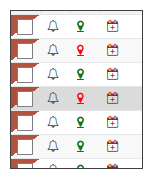

Kontrola GPS souřadnic
Každá adresa má své GPS souřadnice. Aplikace tyto souřadnice ověří dvojím způsobem. Buď pomocí tlačítka pro hromadnou kontrolu GPS souřadnic, nebo ručně po jednotlivých adresách pomocí ikonky na řádce spisu (viz obrázek).
Ikonka má dva možné stavy:
- zelenou barvu - která znamená, že je adresa ověřená a adresa je použitelná pro trasaci.
- červenou barvu - adresa je buď neověřená, nebo ověřená, ale funkce Googlu adresu nenalezla či jich nalezla několik. Uživatel musí tedy spustit tuto funkci ručně a vybrat či zapsat správnou adresu.